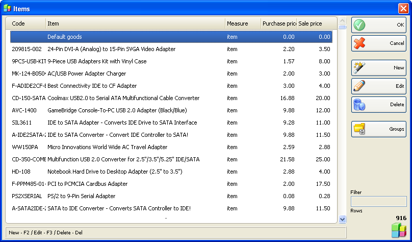

Articole
Fereastra Articole (shortcut taste Ctrl+S) se va folosi pentru a selecta un articol, pentru a adauga un articol nou, a modifica un articol existent sau a sterge un articol existent, act si pentru a edita lista de articole. Pentru a selecta un articol din lista, click pe linia corespunzatoare din lista (table). Click pe butonul OK �pentru confirmare. Click butonul Cancel pentru inchidere fara a efectua selectarea.
Daca ati efectuat o operatie si doriti sa selectati mai mult de un articol, mentineti apasata tasta Ctrl si click pe articolele dorite (aceste articole vor fi marcate ca selectate). Se pot selecta articole successive prin mentinerea apasata a tastei Shift si folosind tastele sageata sus/jos.
Se pot folosi butoanele New, Edit, Delete pentru a adauga un articol nou, a edita sau sterge un articol existent. Pentru a edita sau sterge un articol existent, trebuie selectat articolul respective inainte si confirmata actiunea dorita. Se poate deasemenea deschide fereastra de editare prin dublu click pe Editare .

�2006-2012 Microinvest, All rights reserved